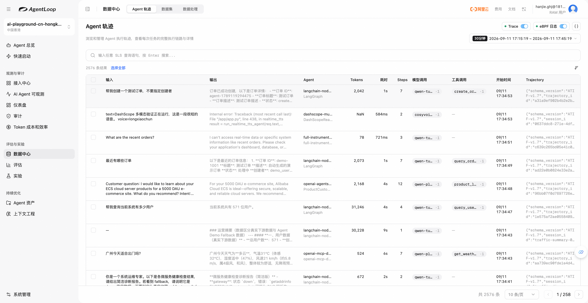
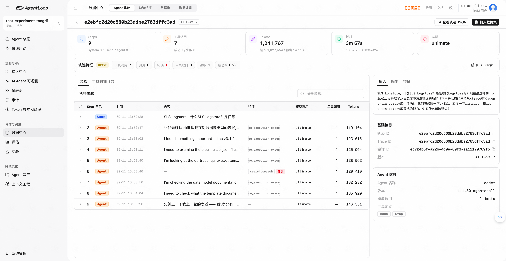

第 19 章 Agent 轨迹数据¶
用户反馈回答没解决问题时，团队需要知道：Agent 没理解需求，没有找到材料，还是没有正确使用材料？轨迹把输入、行动、工具反馈与输出放在一起，让业务人员沿着实际过程找到改进方向。
在上一章中，先看懂真实执行、确认问题，再把同类数据交给 Pipeline 加工，评估与实验才有明确对象。
19.1 先找到一条自己知道发生了什么的任务¶
第一次使用轨迹，可以向产品客服 Agent 提问“如何做评估”，记下执行时间、问题和回答；若调用方能提供 TraceID 或 SessionID，也一并保留。选择自己执行过的任务，更容易核对记录是否正确。
选择对应 AgentSpace，进入“数据中心 → Agent 轨迹”。首次使用时，如果页面提示尚未接入观测数据，先按接入指引完成配置；如果尚未开启轨迹清洗或采集，阅读界面的处理和费用提示，再按提示开启。完成配置后发起一条新任务验证，不要仅凭开关已开启就认为数据已到达。
回到轨迹列表，把时间范围调整到这次执行附近，查看输入、输出、Agent 应用、模型、步骤数、Tokens 和耗时。打开对应记录，核对问题原文和回答；若任务调用了知识检索工具，再确认能看到该次调用和返回。

列表为空时，依次检查 AgentSpace、时间范围、筛选条件和采集状态，再回到观测页面确认新请求有没有上报。先区分数据未采集与 Agent 未正确执行，避免反复发业务请求来代替定位。
第一条记录看对后，再挑一个失败任务和一个多轮任务。前者检查错误反馈是否保留，后者检查用户补充的信息是否能在相关记录中找到。做到这一步，团队才有了可以日常使用的分析入口。
19.2 按问题选择检索方式，逐步缩小范围¶
已知具体执行时，优先使用 TraceID 精确查找；需要查看一段连续交互时，用 SessionID 找相关记录。没有标识时，可以结合 Agent 应用、模型、工具名和时间范围定位。筛选条件从少到多增加，结果为空时先撤掉最近增加的条件，不必同时修改所有设置。
| 想调查的问题 | 列表中怎样开始找 |
|---|---|
| 某次用户投诉 | 时间范围配合 TraceID，或用户输入中的关键字 |
| 用户多次补充信息仍未解决 | SessionID，结合相关输入和输出 |
| 使用某个工具的任务表现不佳 | Agent 应用、工具名和对应时间范围 |
| 哪些任务明显变慢 | 同一应用下按耗时范围筛选，再比较 Steps 和 Tokens |
| 同一业务意图是否反复出现 | 对输入使用语义搜索，打开结果确认是否属于目标场景 |
输入、输出检索支持“关键字匹配”和“语义搜索”。已知原话、产品名称或特定错误表述时，关键字更容易定位；想找“用户要求具体操作步骤”这类意思相近、措辞不同的问题时，可以使用语义搜索。输入框查的是用户需求，输出框查的是 Agent 回答，二者应按调查目标选择。
例如，调查“如何做评估”类问题，可以先在输入侧搜索这一意图，再看结果是否包括“怎么给回答评分”“怎样建评测任务”等相关问法。相似度只负责选出候选，不代表这些任务有相同难度或相同错误；保留默认设置看几条结果，再依据界面提示调整，不要把搜索分数当作质量分。

找到一组记录后，先读几条代表样本。如果有些用户只想了解概念，另一些需要完整操作流程，应该分开分析。把这两类任务混在一起，会误把简短但合适的回答判为不完整，也可能把泛泛介绍误认为解决了操作问题。
19.3 读一条轨迹：先看目标与结果，再展开关键步骤¶
打开详情后，可以先从右侧输入、输出了解任务：用户最终要求是什么，Agent 给出了什么答案。再看步骤数、工具调用、Tokens 和耗时概览，确定需要重点检查哪个环节。暂时不用逐字阅读全部内容。
接着查看“执行步骤”，沿用户补充、Agent 行动、工具返回和后续回答的顺序阅读。记录较长时，可用“搜索步骤”定位工具名、关键内容或错误提示，再展开相关步骤的完整内容。步骤中的工具调用可继续展开“入参”和“执行结果”，并查看已有的调用身份、耗时和 Token 信息。
以产品客服为例，用户问“如何做评估”，先找到它的知识检索动作。检查检索词是否针对评估流程，返回内容是否包含操作说明，再看后续回答是否使用了这些内容。如果检索结果已经有完整步骤，Agent 却只输出概念介绍，改进方向与“知识库根本没有材料”不同。
多 Agent 任务中，若详情展示关联子轨迹，可以沿委派关系查看对应工作。需要确认主 Agent 交给子 Agent 的目标，以及它实际收到的返回，不能只看子 Agent 是否结束。并行显示的步骤也不一定存在先后依赖，应结合调用关系理解。

分析时，尽量把结论落到一组相邻事实：“用户要求操作步骤 → 检索返回了步骤 → 最终回答遗漏步骤”。这样的记录便于别人复核，也能直接用于后续评分。单独写“回答质量不好”，下游仍然不知道应该检查什么。
需要确认字段、调用标识或导出结构时，可使用“查看轨迹 JSON”。怀疑记录缺失或对应关系错误时，再由工程人员结合身份回查采集记录；业务结果仍需以实际工具反馈和业务状态为依据。
19.4 把排障、成本分析和业务质检落到具体行动¶
工具失败，先判断 Agent 怎样处理失败。 以退款任务为例，用户已给出订单号，工具返回“缺少退款原因”，Agent 却回复“申请已提交”。展开工具入参确认缺少哪个字段，再查看失败后的行动：它是否追问原因、修改参数或重新调用？若它确实收到了错误却仍告知成功，应改进错误处理和回复策略；若返回内容没有清楚表达失败，则需要同时检查工具接口。业务是否真的产生退款申请，还要核对业务系统结果。
保留失败后的重试过程很有用。修正参数后成功，说明 Agent 能恢复；多次原样重试同一错误，则可能需要调整重试或停止条件。二者都出现了失败调用，但不应给出同样的调优建议。
耗时或 Tokens 偏高，先找多出来的工作。 用应用、业务意图和耗时条件找到一组相近任务，在列表与详情中比较步骤和 Token 消耗，再展开高消耗记录。检查是不是反复检索同一材料、工具一次返回了大量无关内容，或者 Agent 多次尝试相同动作。
例如，两次都在回答“如何做评估”，其中一次反复查询相同文档。逐次查看查询和结果：如果后来取得了新信息，重复检索可能有价值；若输入与结果几乎没有变化，则可以提出复用已有检索结果、限制无效重试或缩小工具返回内容的候选。记录相关步骤，并在实验中验证减少调用后答案是否仍然完整。
不要仅凭总 Tokens 高就删步骤。复杂任务需要更多探索，必要的测试和状态确认也会增加消耗。Tokens 用于定位资源使用，费用还与所用模型和计费方式有关；实际决策需要把任务质量、耗时与消耗一起比较。
业务质检，重点看回答与执行事实是否一致。 产品客服的两类常见问题是“有哪些功能”没有覆盖关键能力，以及“如何做评估”没有给出可执行步骤。先用输入检索找到两类记录，分别阅读其回答与检索过程，判断缺项来自知识、检索还是回答组织，再各留几条有明确依据的候选。
如果业务要求生成文件、提交表单或修改配置，还需查看最终产物或业务状态。Agent 回答“完成”只是一条输出；工具接收请求、任务执行结束和业务目标达成都不是同一件事。材料不足时先记录待确认，避免把采集问题直接变成 Agent 的 Badcase。
分析后应明确下一步：补知识、修工具、改回答策略、调整执行流程，或者先补数据，再通过评估和实验验证修改。
19.5 把有价值的记录留成样本，再把同类数据交给 Pipeline¶
读到值得保留的任务，可以在详情顶部点击“加入数据集”；也可以回到列表勾选多条记录后加入。弹窗支持创建新数据集或选择已有数据集，并配置要写入的字段。首次建立候选集时，保留用户输入、Agent 输出和轨迹内容；需要分析来源或消耗时，再增加应用、模型、工具名、Tokens 等字段。
写入已有 Dataset 时，核对字段映射是否对应原有含义，尤其不要把最终答案和完整轨迹接反。写入后打开目标数据集，检查选中的题目、回答和必要过程是否在同一条记录中。对于较长轨迹，还应确认后续评估需要的内容是否保留；如需更完整或有针对性的材料，可以通过 Pipeline 提取。
这些记录此时是候选样本。业务人员还要确认问题是否成立、补充期望行为，再决定哪些进入黄金集。可以为“功能覆盖”“操作指导”各保留失败例，也保留几条正常例，避免下一次修改只改善投诉样本，却损害常规回答。
当需要处理全部匹配记录时，列表支持选择符合条件的数据；数据量较大、界面提示使用 Pipeline 导入时，提交的是后台处理任务。确认时间范围、筛选条件和目标数据集后，再检查任务运行结果与实际入库样本。看到“任务已创建”后，就可以去追踪运行，而不是把它当作所有数据已经写入。
单条复盘帮助团队发现规则，Pipeline 负责把规则重复应用到更多数据。例如，将“操作指导”类轨迹整理为用户问题、检索结果、最终回答和工具状态；对重复投递去重；按业务场景分流；为后续评估补充需要的字段。持续产生的数据也能沿同样规则加工，不必每天手工复制轨迹。
进入下一章前，可以先准备一句明确需求：“处理这段时间产品客服的操作类问题，每条保留题目、相关检索内容、最终回答和来源标识，写入候选数据集。”再拿几条真实轨迹预览，检查规则是否保留了判断所需的内容。业务目标与样本一起交给管线，才能逐步形成可复用的处理流程。
19.6 理解三个对象，避免把记录范围当成任务结论¶
前面的操作会反复遇到 Trace、Session 和 Trajectory。它们组织数据的方式不同，理解这一区别有助于决定该找哪些记录、什么结论还需要补证。
| 对象 | 组织什么 | 使用时怎样理解 |
|---|---|---|
| Trace | 由追踪上下文关联的一组调用，包含模型、工具及相关服务操作 | 适合定位某次执行和调用问题；能看到的范围取决于实际采集 |
| Session | 应用关联的一段连续交互，可能包含多条 Trace | 适合查看用户补充和上下文；同一会话中可能有多个任务 |
| Trajectory | 整理后的用户与 Agent 步骤、工具交换、结果和指标 | 适合阅读行为过程、分析和加工样本；仍需核对当前记录覆盖哪些任务部分 |
一次同步问答可能恰好对应一条 Trace；多轮、异步回调或子 Agent 执行则可能留下多份记录。SessionID 帮助查找相关交互，但不会自动证明它们都属于同一个任务。应用需要提供可靠的身份和关联，不能凭时间接近或文字相似就认定平台已经恢复完整任务。
轨迹整理会提取行为主干、减少模型请求中反复携带的历史内容，并关联工具请求和返回。这样业务人员能直接阅读步骤，而不必逐条翻底层 Span。真正发生的重试仍有分析价值；失败、缺失返回和未取得业务结果，也应在使用时分别对待。
Agent 观测与优化使用 ATIF 组织可交换的轨迹内容，包括步骤、消息、工具调用与观察结果、运行指标和来源扩展。统一结构让展示、Pipeline 和评估能够复用同一份行为材料。通常无需手写 JSON，只有对接外部工具或排查字段时才需要查看具体格式。
轨迹记录一次执行发生了什么；重新实验还需要题目、运行入口、必要的环境和评分标准。接下来的数据处理，会把这些行为材料整理成可供评估和实验使用的样本。